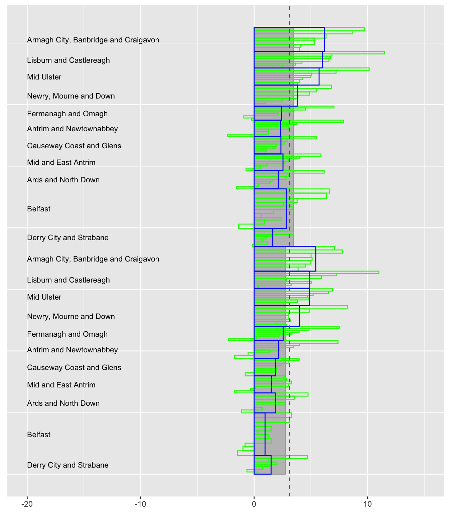

NestingYesOrNo.RmdGrouping variables define subgroups of the data. If there are several grouping variables they can be nested like the subsectors of sectors in the UK CPI data (the CPIuk dataset) or not nested like age, gender, area in the Northern Ireland population data (the NIpop dataset). In fact, with NIpop there can be a mixture of nesting and non-nesting. The variable area_name representing 80 District Electoral Areas is nested within the variable LGD2014_name representing 11 Local Government Districts. This is shown in the next figure.
library(UpAndDownPlots)
library(tidyverse)
kk <- ud_prep(NIpop, v1="y2011", v2="y2017", levs=c("LGD2014_name", "area_name"), sortLev=c("perc", "perc"))
k1 <- ud_plot(kk, labelvar="LGD2014_name")
k1$uadlFig 1: All LGD’s increased in population over the six years and only a few areas recorded decreases. Belfast, the largest LGD, had the second lowest increase, with Derry having the lowest. The sorting of areas within districts by percentage change makes it easier to see the nesting.
km <- ud_prep(NIpop, v1="y2011", v2="y2017", levs=c("gender", "age", "LGD2014_name"), sortLev=c("perc", "orig", "perc"))
k2 <- ud_plot(km, labelvar="age")
k2$uadlFig 2: Changes by district within the age by gender groups. The biggest increases occurred amongst the 65+ males and the biggest decreases amongst the 16-39 females.
The districts are sorted by their overall percentages so the district order is consistent within the individual age by gender groups but the patterns are not. The increases for 65+ are uniformly high with one exception for both genders. The next graphic looks into this.
kp <- ud_prep(NIpop, v1="y2011", v2="y2017", levs=c("age", "LGD2014_name"), sortLev=c("orig", "perc"))
k3 <- ud_plot(kp, labelvar="LGD2014_name")
k3$uadlFig 3: Percentage changes of districts by age groups with districts sorted by overall percentage change. Belfast is very different in the 65+ group.
The two nested grouping variables, LGD2014_name and area_name, can be used together with one of the non-nested variables like gender. The package assumes that the nested variables are kept together, so that in this situation they would both come before gender or both come after. Figure 4 shows an example.
kq <- ud_prep(NIpop, v1="y2011", v2="y2017", levs=c("gender", "LGD2014_name", "area_name"), sortLev=c("orig", "perc", "perc"))
k4 <- ud_plot(kq, labelvar="LGD2014_name")
k4$uadl
Fig 4: An UpAndDown plot of areas within districts by gender, males above, females below. The district patterns are broadly similar, although the rate for females in Belfast is lower than for the males.
The patterns in this example are fairly similar, because male and female rates are fairly close. Nevertheless the district percentage changes within gender do not show a regular decline because the districts have been sorted as if they were the only level. This is to ensure that the districts are in the same order for both genders.
One grouping variable can be separately nested in each of two other grouping variables (“double-nesting”). Take the Car sector of the AutoSales dataset and remove the X4 and OTHER models. The variable Model is then nested in both Segment and Manufacturer. The filtering is necessary because otherwise a few model names are recorded in more than one segment and then the variables appear not to be nested.
The package assumes that any double-nested variable is always last to be drawn and is nested inside the immediately preceding grouping variable.